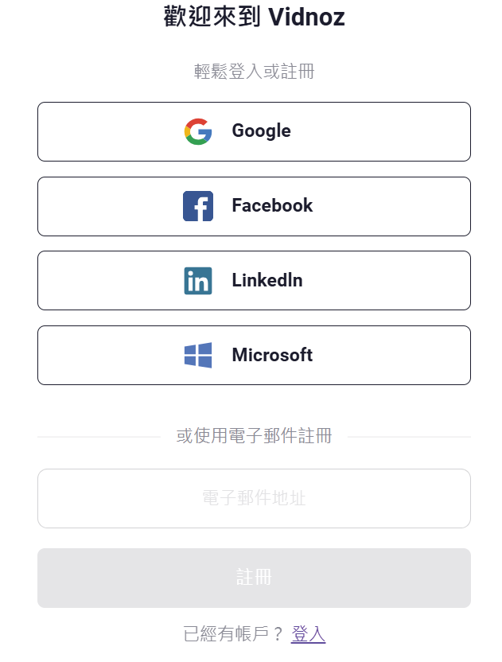
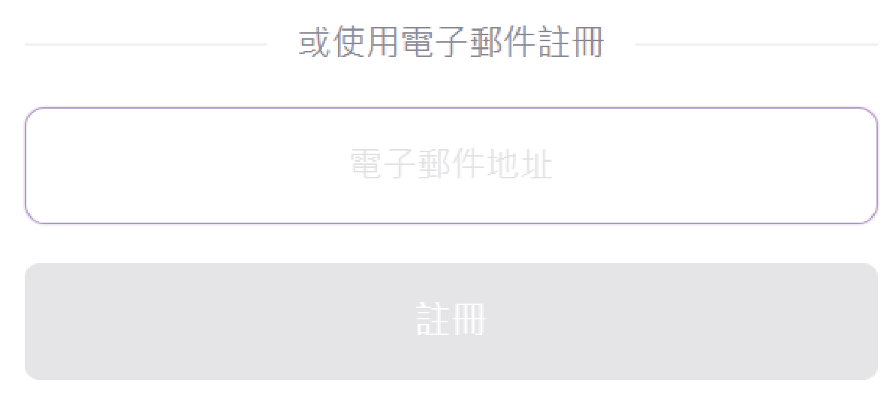

VIDNOZ網站註冊方法
Vidnoz 是一個免費的 AI 視頻生成平台，提供超過 1500 個 AI 頭像、1380 多種逼真的 AI 聲音，以及 2800 多個視頻模板，讓您能夠快速創建高品質的視頻內容。
註冊帳號後，您可以利用這些資源，按照以下步驟創建您的 AI 視頻：
要在 Vidnoz 平台上註冊帳號，請按照以下步驟進行
使用步驟
步驟 1：進入網站
在Google搜尋Vidnoz前往網站或點選進入VIDNOZ官方中文網站。
步驟 2：選擇註冊方式
如沒有帳號可登入時，也有Google、Facebook、Linkedln、Microsoft等選擇註冊。或是利用電子郵件註冊。

步驟 3：填寫註冊資訊
如果選擇使用電子郵件註冊，請輸入您的電子郵件地址和密碼，並按照提示完成其他必要資訊的填寫。

步驟 4：完成註冊
提交註冊資訊後，您可能需要驗證電子郵件地址。驗證完成後，即可開始使用 Vidnoz 的各項功能。
恭喜您完成註冊！🎉 現在就開始體驗 AI 創作吧！
- 🎭 立即選擇一個 AI 頭像，輸入文字，讓 AI 為您生成影片！
- 🎤 試試看不同的 AI 配音，找到最適合您的風格。
- 🎞️ 探索超過 2800 種免費視頻模板，輕鬆創建專業級影片！
開始創作 ➜
注意事項
在註冊 Vidnoz 時，有幾點注意事項要留意：
- 1. 確保電子郵件有效： 註冊時請輸入有效的電子郵件，以確保能夠收到驗證郵件。如未收到，請檢查垃圾郵件夾或重新發送。
- 2. 設定安全密碼： 若使用電子郵件註冊，請選擇安全性高的密碼（包含大小寫字母、數字與特殊符號）。
- 3. 了解免費與付費功能： Vidnoz 提供免費計畫，但某些 AI 功能或影片時長可能有限制，請確認是否符合需求。
- 4. 注意隱私與數據安全： 註冊前請閱讀 Vidnoz 的隱私政策，確保你理解數據處理方式。如不再使用，可手動刪除帳號。
- 5. 避免重複註冊： 若曾使用 Google 或 Facebook 登入，請勿使用不同電子郵件重複註冊，以免帳戶混淆。
返回首頁